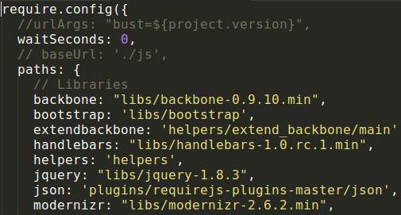

Frontend Refactor
Created by Marco A. Pajares / gitHub
Index
Why use Backbone?
- We really need
MVC for the front end. Traditional methods leave us with code that's too coupled, messy and incredibly hard to maintain. Storing data and state in the DOM is a bad idea. This started making more sense after creating apps that needed different parts of the app to be updated with the same data.Fat models and skinny controllers are the way to go. Workflow is simplified when business logic is taken care of by models.Templating is an absolute necessity. Putting HTML inside your JavaScript gives you bad karma.
1 - Intro to Backbone
1.1 - Backbone essentials
Backbone's core consists of four major classes:
- Model
- Collection
- View
- Controller
1.1.1 - Model
In Backbone, a model represents a singular entity --
1.1.2 - Collection
Collections in Backbone are essentially just a
1.1.3 - View
A view handles two duties fundamentally:
-
Listen to events thrown by the DOM and models/collections. -
Represent the application's state and data model to the user.
Why use Sass?
Sass is a
Features
- Syntax
- Compass
- Variables
- Mixins
- Extends
Why use Jasmine
Jasmine is a behavior-driven development framework for
Why use Grunt?
In one word:
Struct
From now on, we are going to try a new struct to develope new backbone apps like could be catalitycs or trends
1 - src/test
test folder has been created to store Jasmine tests
1 - src/main/Resources
resources folder has been created to store documentation and style preprocess files
- Contain:
- Documentation generated with Yuidoc
- Style Sass files (not Css)
1 - src/main/Webapp/js/apps
apps folder has been created to store Backbone applications
Backbone App
In order to create or check a new Backbone application, creator must take the following steps:
- Router
- Create Struct
- BaseView
- Check Require
1 - Router
inside js/router.js file, must appear URL and METHOD
"url":"method"
- Important! About notation:
- URL: must be lowercase, as specific as could be, and use underscore (_) for composite words.
- methods & Backbone Apps: must be using camelCase notation
2 - Struct
- Every Backbone App must contain the following folders:
- entities: models and collections are placed here
- templates: every Jade/Handlebars must be here
- views: every view must be here ATENTION! inside this folder must appear always a yourappnameBaseView.js
3 - BaseView
In order to simplify create Backbone apps, inside router.js there is a method called 'load backbone' that search inside apps/yourBackboneApp/views/yourBackboneAppBaseView.js to init the app, thats why must exist a BaseView.js file
4 - RequireJs
When maven production task start, uglify every Js code, and use requireJs to avoid ask server multiple times for the same file. To do that, require.js needs a dependencies map, wich is located on 'js/config.js' and contain every dependencies that the app has.
Style
grunt style
In order to create or check a style file, creator must take the following steps:
- check deps
- create a file inside /custom
- link to init file

1 - check deps
-
Inside resources/stylesheets folder there are two folders:
- custom: wich are located every style file made by us
- vendors: wich are located every external css lib that our code need
So, if you have to import external css, place it into resources/stylesheets/vendors
2 - create a file inside /custom
create a file inside resources/stylesheets/custom folder and wrap it using a div
3 - link to init file
- Inside resources/stylesheets folder there are two files:
- new_sytle: listed some scss file located on custom folder and use BOOTSTRAP v3 to generate new_style.css
- old_sytle: listed some scss file located on custom folder and use BOOTSTRAP v2 to generate old_style.css
Why testing code?
grunt test
- its our proof/evidence that our code works properly
- its a way to avoid future unexpected problems
- run in a controlled environment
Generating a Spec
Inside 'test/spec' are listed all tthe backbone applications that right now exist, just create another folder and using require call your new aplication and start to add tests!
Generating a Spec
Using grunt many important task has been created
- Download external deps/libs using
Bower - Genarting Html files from
jade/handlebars - Generating style files from scss (
sass ) - evaluating JS code syntax using
JsHint - evaluating JS code works using
Jasmine - compress and uglify every js files in order to generate main-built using
requireJs - Generating documentation using
Yuidoc Clean workspace
main task
| command | Bower | template | style | Jshint | Test | requireJs | Doc |
|---|---|---|---|---|---|---|---|
|
|||||||
|
|||||||
|
|||||||
|
|||||||
|
|||||||
|
|||||||
|
|||||||
|
Documentation
Inside 'resources/js-documentation' exist a file named 'index.html' where you could see every comment that appears on js files.